El IMMCA en el congreso de la Neurotoxicity Society
En Montevideo presentamos nuestros trabajos junto a unos 200 especialistas de todo el mundo.
Ver en InstagramConsejo Nacional de Investigaciones Científicas y Técnicas · Universidad Nacional de Tucumán · Sistema Provincial de Salud de Tucumán
Unidad Ejecutora
En Montevideo presentamos nuestros trabajos junto a unos 200 especialistas de todo el mundo.
Ver en Instagram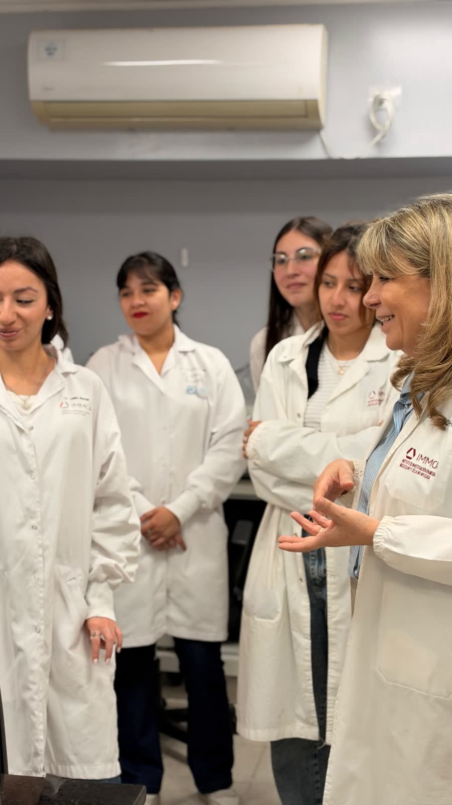
En las XXVII Jornadas Científicas Augusto Palavecino, estudiantes y egresados conocieron las investigaciones de nuestros laboratorios.
Ver en Instagram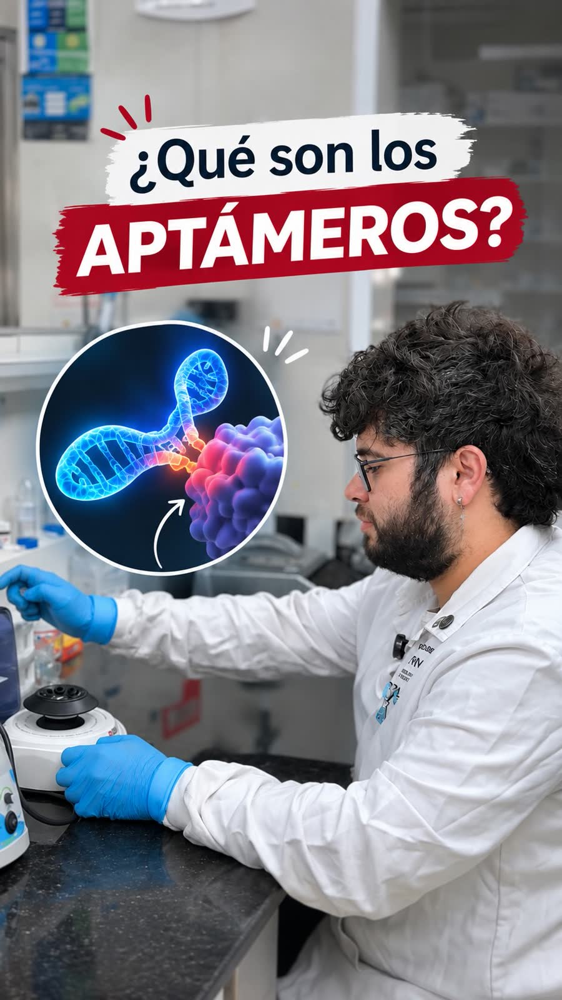
Álvaro Luna Mercado participó del congreso de la Red Iberoamericana de Aptámeros (REDIBA) y de un curso internacional del Centro Argentino-Brasileño de Biotecnología.
Ver en Instagram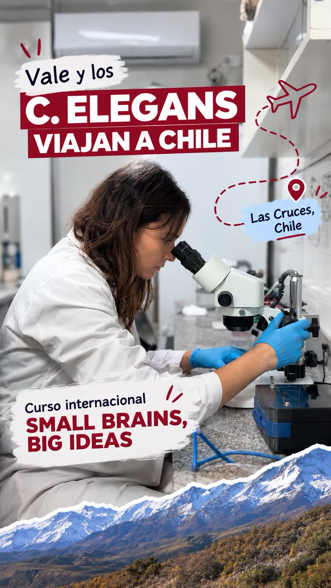
Valentina Budeguer, doctoranda del IMMCA, participa del curso internacional «Small Brains, Big Ideas», en Las Cruces.
Ver en Instagram
El CONICET NOA Sur lanzó su plataforma de servicios del noroeste argentino. El IMMCA ofrece allí cinco servicios tecnológicos.
Ver en PLASENOA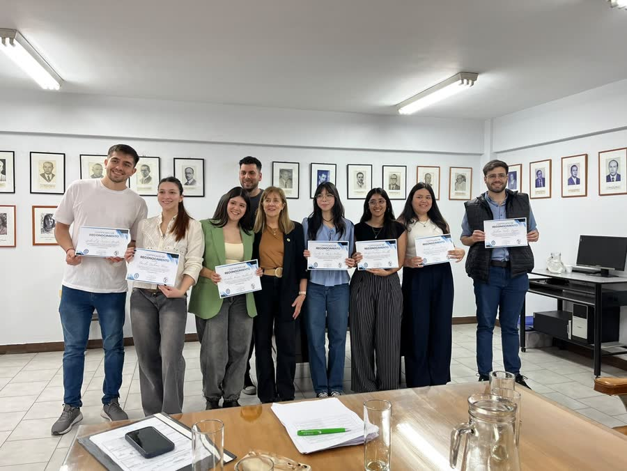
La Facultad de Bioquímica, Química y Farmacia de la UNT la distinguió por su trabajo, seleccionado para las Jornadas de Jóvenes Investigadores de AUGM en Brasil.
Ver en Instagram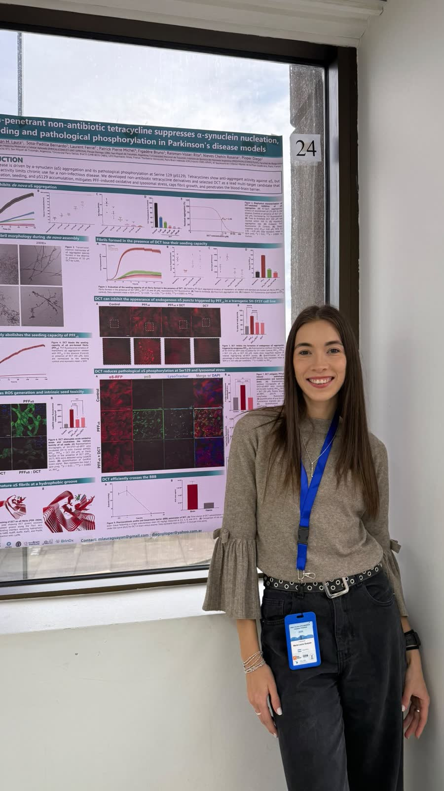
Fue seleccionada para la primera Escuela de Neurociencias y presentó su trabajo en el congreso FALAN, junto a Valentina Budeguer.
Ver en Instagram
Contamos el camino que va de las primeras preguntas sobre agregación de proteínas a nuevas tecnologías para enfermedades neurodegenerativas.
Ver en Instagram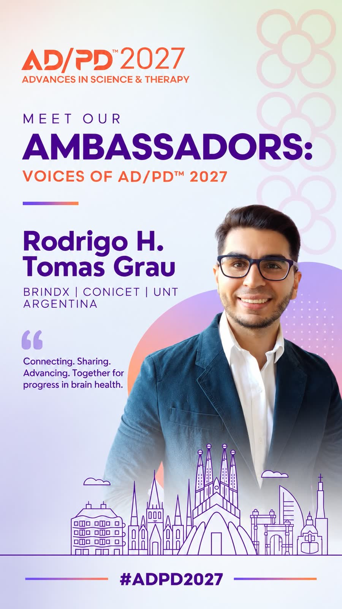
Fue seleccionado como Ambassador de «Voices of AD/PD», uno de los principales congresos internacionales sobre Alzheimer y Parkinson.
Ver en Instagram
Recibimos a estudiantes en stands y pósters, y nuestra directora dio una charla en el Instituto Técnico de Aguilares.
Ver en Instagram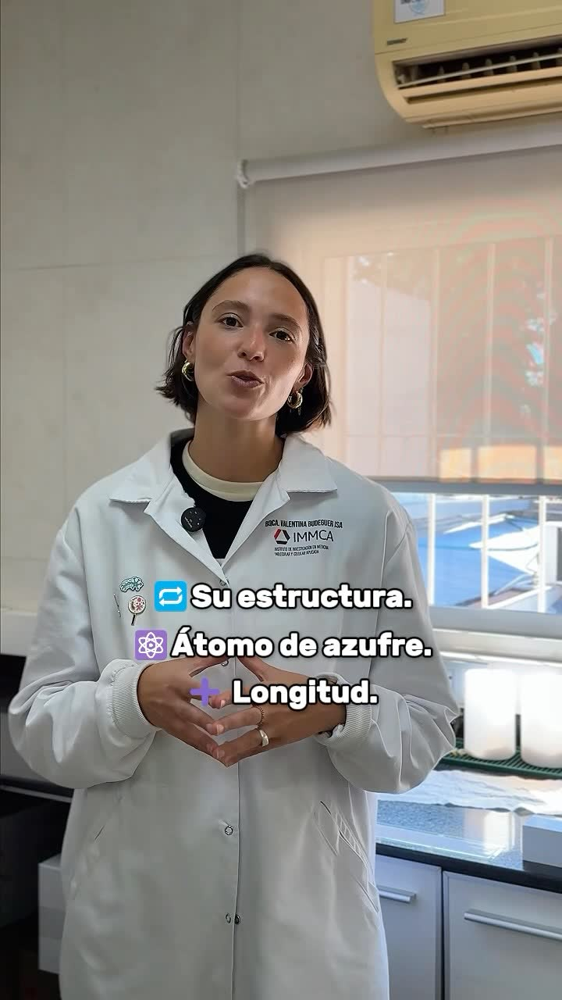
Rediseñamos el puente que une las dos partes de Pegasus y obtuvimos tres moléculas nuevas que conservan su capacidad de interferir con la agregación de alfa-sinucleína.
Ver en Instagram
Una iniciativa del IMMCA junto con la UNT, el CONICET, el Ministerio de Salud Pública, la Municipalidad y el Hospital Padilla.
Leer en CONICET NOA SurLa Resolución 1204/SPS/25 aprueba el convenio con SkyBio LLC y reconoce al IMMCA como lugar del desarrollo.
Leer en el MinisterioLa startup nacida en el IMMCA ganó el concurso de planes de negocio del Instituto Balseiro, entre 34 proyectos de todo el país.
Leer en IN TucumánPegasus, diseñada en el IMMCA junto a la UBA y SkyBio, mostró en estudios preclínicos mejorar los síntomas y proteger a las neuronas.
Leer en CONICETQué sabemos hoy de la enfermedad y en qué trabaja el instituto para diagnosticarla antes.
Leer en immca.conicet.gov.ar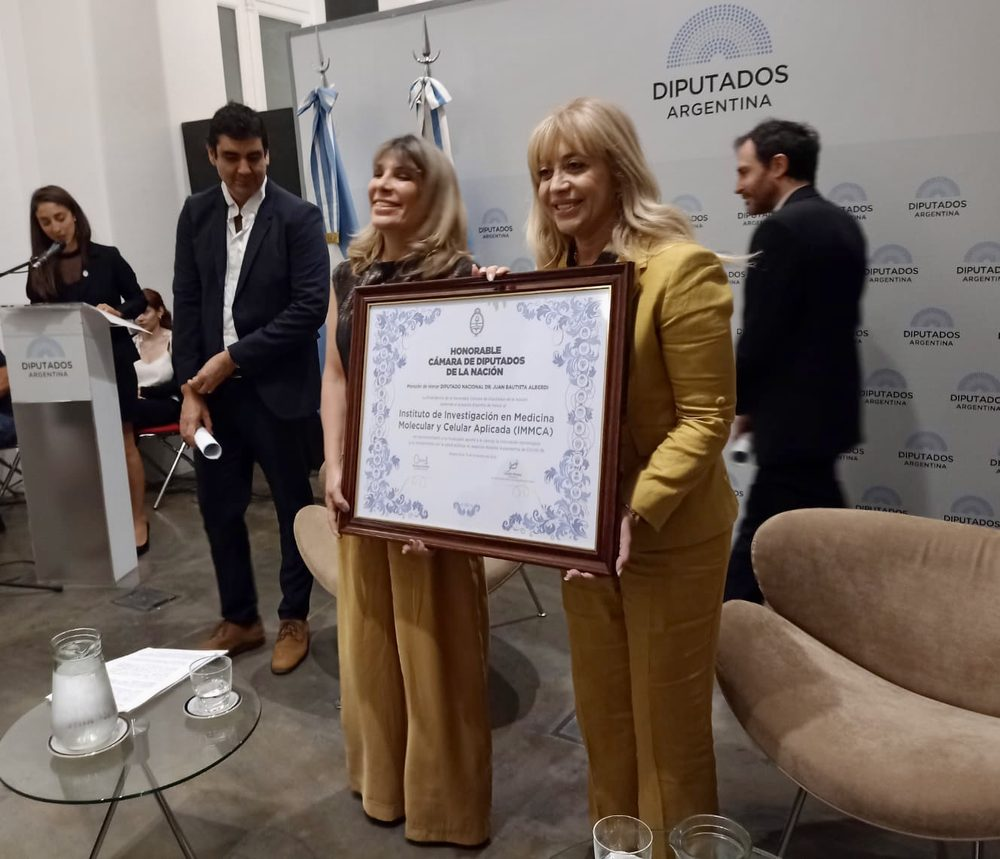
Reconocimiento al IMMCA por su aporte a la ciencia y a la innovación, y por su compromiso con la salud pública durante la pandemia de COVID-19.
Nuevos métodos diagnósticos para enfermedades neurodegenerativas.
Leer en immca.conicet.gov.arUn test serológico desarrollado en Tucumán que tuvo grandes resultados durante la pandemia.
Leer en CONICETUn trabajo con participación del IMMCA confirmó la duración de la respuesta tras la vacunación.
Leer en CONICETLa directora presentó el caso del IMMCA: triple dependencia y articulación con el sector privado.
Leer en immca.conicet.gov.arFibras amiloides para eliminar uretanos en vinos de exportación.
Leer en immca.conicet.gov.arLa cooperación con equipos franceses en Parkinson y Alzheimer.
Leer en immca.conicet.gov.arCiencia básica, clínica y vinculación con empresas, con el respaldo de CONICET, la UNT y el SIPROSA.

Empezamos como un pequeño grupo de biofísica de proteínas. Cuando nuestras preguntas se acercaron a la enfermedad de Parkinson, nos unimos a los neurólogos del Hospital Padilla. De esa alianza nació un instituto dedicado a la medicina traslacional.
Se forma en el INSIBIO un grupo que estudia la agregación amiloide desde la física, todavía sin cultivos celulares ni modelos in vivo.
El grupo aplica la biofísica al estudio del Parkinson y se suman los neurólogos del Hospital Padilla.
En noviembre se presenta la solicitud de creación, con el modelo del Instituto del Cerebro de París como referencia y un proyecto edilicio de 480 m².
Scientific Reports publica cómo la doxiciclina remodela los oligómeros tóxicos de alfa-sinucleína. El trabajo recorre los medios del país.
El 23 de mayo, CONICET, UNT y el Ministerio de Salud Pública de Tucumán firman el convenio marco. Ese mismo día se firma un memorándum con SkyBio.
CONICET, UNT, SIPROSA, FCEN-UBA y SkyBio firman un acuerdo para desarrollar un nuevo transportador de dopamina al sistema nervioso central.
El instituto pone sus plataformas al servicio de la salud pública: diagnóstico, inmunidad y secuelas neurológicas del SARS-CoV-2.
Convenio Aristaeus: un dispositivo de diagnóstico basado en derivados de tetraciclinas que se unen a un biomarcador de la enfermedad.
La patente del candidato a fármaco para Parkinson se aprueba en Estados Unidos y en la Unión Europea, y sigue en trámite en otros seis países. En 2025 se aprueba su licencia a SkyBio LLC.
Pegasus completa su evaluación preclínica en laboratorios de Estados Unidos y queda listo el paquete pre-IND para la FDA.
Prevista para febrero: el paso previo a pedir autorización para los primeros estudios en personas.
En las últimas dos décadas, los centros que juntaron laboratorio y hospital mostraron algo concreto: cuando la investigación experimental y la práctica médica trabajan sobre las mismas preguntas, aparecen nuevos tratamientos y diagnósticos, y mejora la atención en los hospitales públicos.
La UNT, el CONICET y el Ministerio de Salud Pública de Tucumán decidieron llevar ese modelo a la provincia. Primero relevaron los proyectos biomédicos en marcha para ver si había masa crítica para un instituto de medicina traslacional. La respuesta fue que sí. El SIPROSA cedió un espacio en Dorrego 1080, en las inmediaciones de Plaza Belgrano, y allí se construyó la primera etapa del edificio, con salas de cultivo celular, microscopía confocal y producción de proteínas. Desde entonces el instituto se amplió y sumó nuevos espacios y equipamiento.
Así, investigadores de la UNT y del CONICET empezaron a trabajar en un espacio propio aportado por el sistema provincial de salud.
El modelo: el Instituto del Cerebro (ICM) del Hospital Pitié-Salpêtrière, París
UNT y CONICET aportan los investigadores, la formación de becarios y la pregunta de fondo.
El SIPROSA aporta el edificio, los servicios y algo más valioso: los problemas reales de los pacientes y los estudios clínicos.
Socios privados como SkyBio financian el desarrollo y llevan los resultados al mercado: nuevos fármacos y métodos diagnósticos.
Medicina traslacional ciencia, salud y empresa trabajando juntas
Tres ejes de trabajo que guían al instituto desde su primera dirección.
Laboratorios propios en Dorrego 1080, San Miguel de Tucumán, con equipamiento de alta complejidad para biología molecular y celular.
Sala con esclusa y presión positiva con filtro HEPA, para trabajar con líneas como SH-SY5Y, HEK y BV2.
Imágenes de alta resolución de células, tejidos y organismos modelo.
Expresión, ruptura celular y purificación de proteínas recombinantes como alfa-sinucleína y tau.
Agregación de proteínas, tamaño de partículas y ensayos ópticos en microplaca.
Conservación de muestras y preparación de material.
Investigadores, empresas y organismos pueden usar este equipamiento a través de nuestros servicios tecnológicos.
Ver los servicios
Directora del IMMCA
Investigadora Principal del CONICET y Profesora Titular de Química Biológica en la Universidad Nacional de Tucumán. Bioquímica con el primer promedio de su promoción y Doctora en Bioquímica con calificación sobresaliente.
Se formó en espectroscopía de proteínas en la Universidad del País Vasco y fue profesora invitada en la Universidad Paris-Est. Fue Secretaria de Ciencia, Arte e Innovación Tecnológica de la UNT y hoy integra la Academia de Ciencias Médicas de Tucumán y el comité editorial de Frontiers in Aging Neuroscience.
Buscamos diagnosticar antes y tratar mejor el Parkinson y otras enfermedades neurodegenerativas.
Cada línea une ciencia básica con resultados que salen del laboratorio: patentes, kits, licencias y servicios. Las marcadas con VT tienen vinculación tecnológica con empresas o instituciones.

Rediseñamos las tetraciclinas, antibióticos conocidos, para que protejan a las neuronas sin actuar como antibióticos. Así nació Pegasus, un candidato a fármaco que hoy está en etapa preclínica.
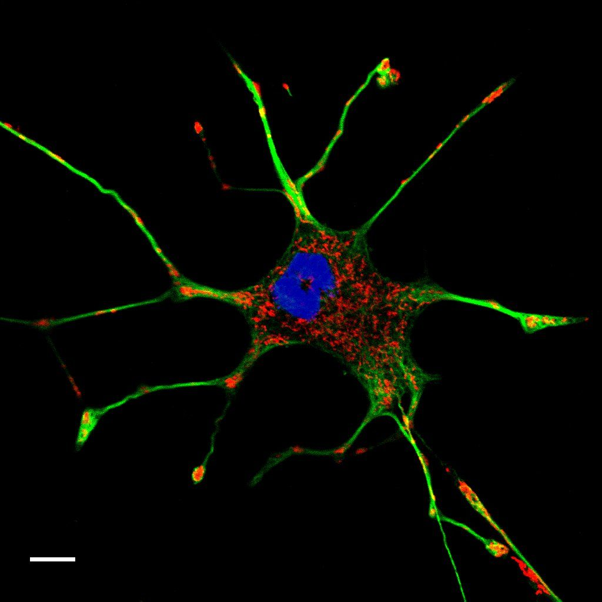
Queremos detectar la enfermedad antes de los síntomas motores: un biosensor, nuevos radiotrazadores para PET y la técnica RT-QuIC con insumos de producción local, con el objetivo de llevarla a muestras de sangre.

Estudiamos cómo la alfa-sinucleína, la tau y otras proteínas forman agregados tóxicos, con modelos experimentales nuevos y la genética del Parkinson en Latinoamérica.
En la pandemia pusimos el instituto al servicio de la salud pública con un test propio de anticuerpos contra el SARS-CoV-2. Hoy estudiamos el efecto del virus en el cerebro.
Producimos alfa-sinucleína y tau en monómeros, fibras y fibras fluorescentes para otros laboratorios, y usamos fibras amiloides como soporte de enzimas para biodiésel, vinos y aceite de oliva.
Un biomarcador es una señal medible en el cuerpo que indica que una enfermedad está presente o avanzando. La mayoría de los biomarcadores neurológicos que se usan hoy, como NfL, GFAP o pTau, miden cuánta proteína hay, y pueden subir también por otras causas.
La RT-QuIC, un ensayo de amplificación de semillas (SAA), mide otra cosa: si en la muestra hay alfa-sinucleína mal plegada capaz de transmitir su forma a otras proteínas, la marca bioquímica de la enfermedad de Parkinson. Puede detectar un agregado entre mil millones de moléculas normales.
Miden cantidad o daño. Son indirectos.
Detecta la forma de la proteína que propaga la enfermedad.
Se descubre que los cuerpos de Lewy, la lesión típica del Parkinson, están formados por alfa-sinucleína.
Primera detección de alfa-sinucleína agregada en líquido cefalorraquídeo con RT-QuIC.
Se logra detectarla en sangre, un paso clave para un análisis más simple.
La FDA emite una carta de apoyo al ensayo de alfa-sinucleína como biomarcador para investigación.
Nos permitió avanzar en la implementación de un test diagnóstico para enfermedades neurodegenerativas.
La técnica necesita alfa-sinucleína humana recombinante, que cuesta unos USD 1.020 por miligramo. La producimos en el IMMCA: 100 mg por mes.
Realizamos la puesta a punto con insumos de producción local, iniciamos la validación junto al ANLIS-Malbrán e implementamos sistemas de gestión de calidad.
Con un proyecto PIETR del CONICET aplicamos la RT-QuIC a vesículas extracelulares de origen neuronal aisladas de plasma.
Además, ofrecemos servicios tecnológicos con nuestro equipamiento y acompañamos startups como BrinDx.
Cada nombre lleva a su ficha oficial en CONICET, con sus temas, proyectos y producción.

Fuente: ficha oficial del IMMCA en CONICET (BICyT). A esto se suman docentes de la UNT, tesistas y estudiantes de grado.
Además de hacer ciencia, nos divertimos. Somos competitivos, un poco locos y no le tenemos miedo al ridículo: festejos de fin de año, desafíos, bailes y mucho humor. Así somos dentro y fuera del laboratorio.
Si te interesa hacer tu tesina, tu doctorado o un posdoctorado en neurociencias, biofísica de proteínas o biotecnología aplicada a la salud, queremos conocerte.
Para estudiantes avanzados de Bioquímica, Biotecnología y carreras afines. Podés presentarte a becas de estímulo CIN o CIUNT.
Con becas doctorales del CONICET, incluidas las de temas estratégicos, y el doctorado de la UNT.
Con becas posdoctorales del CONICET, para sumarte a una línea en marcha o proponer una propia.
¿Te sumás? Contanos qué te interesa y te orientamos.
EscribinosTres décadas de trabajos del grupo. Los de acceso abierto se leen acá mismo; el resto, en la revista.
7investigadores
Somos un equipo chico. Esto es lo que producimos desde 2018.
Además, tenemos presencia permanente en congresos nacionales e internacionales, con comunicaciones y conferencias invitadas.
Promedios sobre 7 investigadores y 9 años (2018–2026). Ficha del instituto en CONICET
Coautores en 13 países
Dos familias de patentes internacionales, con SIPROSA como cotitular junto a CONICET, UNT, UBA y SkyBio LLC.
Diseñado y evaluado en el IMMCA tras más de una década de estudio de las bases moleculares de la enfermedad, y sintetizado en la UBA.
Licenciada a SkyBio LLC · etapa preclínicaBiosensor basado en derivados de tetraciclinas que se unen a la alfa-sinucleína agregada. Fases nacionales presentadas en ocho países. Licenciada a SkyBio LLC.
Acción oficial favorable en EE. UU., noviembre de 2026Pegasus (DAD9) es un candidato a fármaco para la enfermedad de Parkinson diseñado en el IMMCA. Todavía no llegó a pacientes: completó la etapa preclínica y hoy se prepara para pedir autorización a la FDA para los primeros estudios en personas.
Síntesis escalada con certificación GMP. Patentes en 8 jurisdicciones y licencia exclusiva a SkyBio LLC.
Toxicidad, farmacología de seguridad, farmacocinética y estudios conductuales en C. elegans, ratones, ratas y perros. Formulación lista.
Paquete pre-IND para la FDA completo. Reunión prevista para febrero de 2027.
Solo si la FDA lo autoriza. Recién ahí se podrá evaluar su efecto en pacientes.
Más de una década de investigación, de la biofísica de proteínas a un candidato a fármaco.
En el Parkinson, la alfa-sinucleína forma agregados tóxicos y se pierden las neuronas que producen dopamina. La dopamina, a su vez, no llega bien al cerebro cuando se administra como fármaco.
Desde 2017 estudiamos cómo la doxiciclina transforma los agregados de alfa-sinucleína. Con ese conocimiento diseñamos una tetraciclina sin actividad antibiótica unida a la dopamina: DAD9, Pegasus.
En modelos experimentales, Pegasus interfiere con la agregación y la siembra de alfa-sinucleína, el estrés oxidativo y la neuroinflamación, y al mismo tiempo activa receptores de dopamina sin formar los derivados tóxicos de la dopamina libre.
Toxicidad aguda y subcrónica, farmacología de seguridad, farmacocinética, interacciones, vía de administración y estudios conductuales, en C. elegans, ratones (incluido un modelo de Parkinson), ratas y perros beagle.
Patente internacional aprobada en Estados Unidos y la Unión Europea, y en trámite en otros países. Licencia a SkyBio LLC, aprobada por la Resolución 1204/SPS/25 del Ministerio de Salud Pública.
El paquete pre-IND está completo y la reunión con la FDA está prevista para febrero de 2027. El próximo desafío es comprobar si este perfil se traduce en un beneficio para los pacientes.
Una empresa de base tecnológica para diagnosticar antes las enfermedades neurodegenerativas, empezando por el Parkinson.
Surgió cuando integrantes del instituto decidieron crear una empresa para llevar sus desarrollos al mercado. Su equipo reúne a estudiantes y graduados de la UNT con investigadores del CONICET y del SIPROSA. Trabaja en nanorradiotrazadores para diagnóstico por imágenes, ofrece proteínas recombinantes y kits de ensayo para investigación. Junto con el instituto, busca adaptar la técnica RT-QuIC con insumos locales para que funcione en sangre.
Servicios Tecnológicos de Alto Nivel (STAN) del CONICET para empresas, organismos públicos e instituciones de I+D. Cinco de ellos están en PLASENOA, la plataforma de servicios del CONICET NOA Sur.
Probamos si compuestos, extractos o formulaciones modifican la agregación de tau y alfa-sinucleína, y estudiamos proteínas agregadas con capacidad de siembra en muestras biológicas.
Citotoxicidad, actividad metabólica, daño de membrana, estrés oxidativo y respuesta inflamatoria, para elegir candidatos antes de pasar a modelos más complejos.
Imágenes con un Zeiss LSM 800: localización de marcadores, colocalización, morfología celular y reconstrucción en tres dimensiones.
Dispersión dinámica de luz (DLS): tamaño, distribución, agregación y potencial Z de nanopartículas, vesículas, complejos proteicos y formulaciones.
Ensayos en lector multimodo TECAN Spark: cinéticas, actividad enzimática y curvas de concentración y respuesta.
Procesamiento, análisis e interpretación de datos para proyectos de I+D, publicaciones y presentaciones.
ELISA con antígeno S-RBD, desarrollado para reforzar el diagnóstico del Ministerio de Salud de Tucumán.
También firmamos convenios de I+D con empresas, como los de SkyBio y BACON SAIC. Ver en PLASENOA · Ver en CONICET
Contanos qué necesitás y te respondemos con disponibilidad, condiciones y presupuesto.
Responsable de servicios
Sabrina Sequeira
Por iniciativa del IMMCA, la Casa Histórica de la Independencia, el Monumento al Bicentenario, el Rectorado de la UNT, el MUNT, el Centro Cultural Virla y otros edificios de la provincia se encendieron de rojo a las 19 horas, como en muchas ciudades del mundo.
El rojo es el color del tulipán, símbolo internacional de la enfermedad. Frente a la Casa Histórica nos reunimos investigadores, becarios, pacientes, familias y cuidadores, con lecturas, música y baile. Pedimos a la comunidad que fuera con una prenda roja y que compartiera el mensaje: una enfermedad que muchas veces es silenciosa necesita ser vista.
«La concientización es un paso fundamental para mejorar la calidad de vida de las personas con Parkinson.»Rosana Chehín, directora del IMMCALeer la nota en CONICET NOA Sur
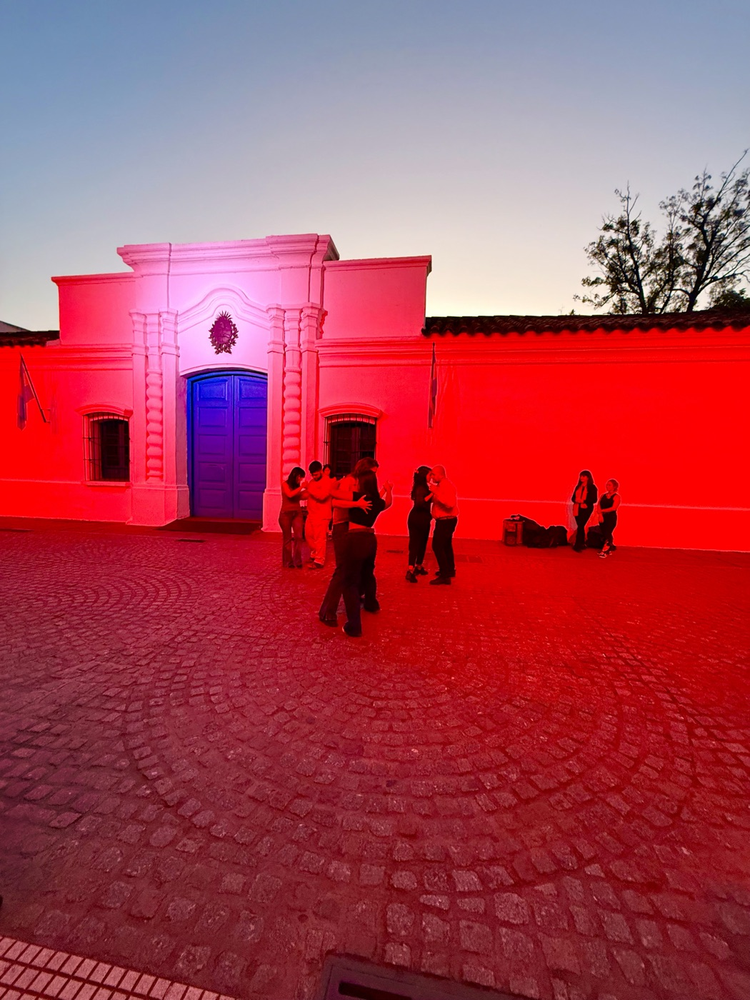

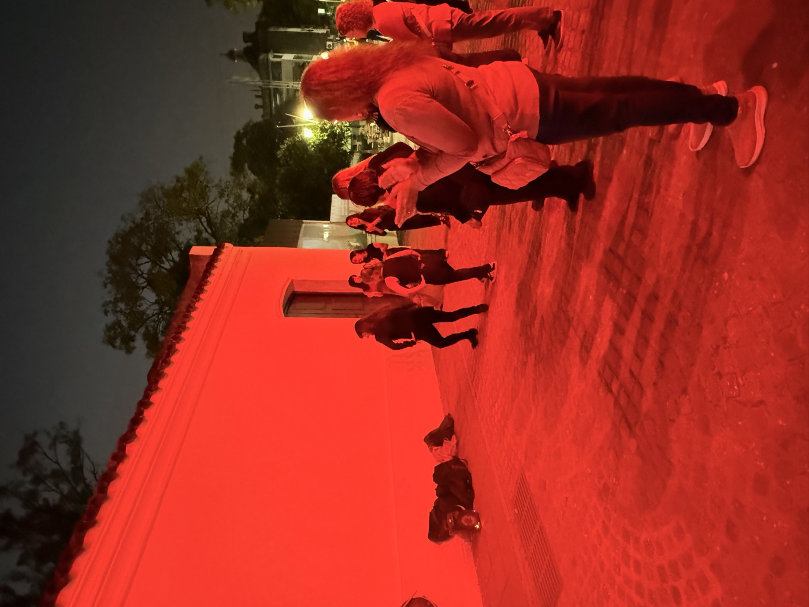

La convocatoria salió en las redes de Hacé Click y de Medios UNT. Fue una iniciativa del IMMCA junto con la UNT, el CONICET, el Ministerio de Salud Pública, la Municipalidad de San Miguel de Tucumán y el Hospital Padilla.
Frente a la Casa Histórica, pacientes, familias, profesionales de la salud e investigadores nos dimos un abrazo simbólico, con el tango de Bondi Milonguero Tucumán. El lunes siguiente, el Hospital Padilla abrió una jornada con especialistas y propuestas para mejorar la calidad de vida de quienes conviven con Parkinson.
Seguinos en @immca.labSomos parte de la Red Argentina de Parkinson, con la que compartimos actividades como el Día Mundial en Tucumán.
Contamos qué se investiga y qué se sabe hoy, en lenguaje claro: desde los encuentros «Café con ALMA» en 2019 hasta el congreso de la Asociación Parkinson Neuquén en 2024.
Participamos del consorcio LARGE-PD, que estudia la genética de la enfermedad en poblaciones latinoamericanas.
Lo que se investiga en un laboratorio público se financia con el esfuerzo de toda la sociedad. Contarlo es parte del trabajo.
apariciones en medios desde 2020, en prensa local y nacional, TV, radio, redes y canales oficiales.
Fuente: archivo de prensa del IMMCA y búsqueda web, noviembre de 2026.
La cuenta más seguida entre los institutos CONICET del NOA, hecha por los propios becarios con dos publicaciones por semana.
Seguir en InstagramColaboraciones científicas, servicios, becas o prensa: escribinos o acercate al instituto.